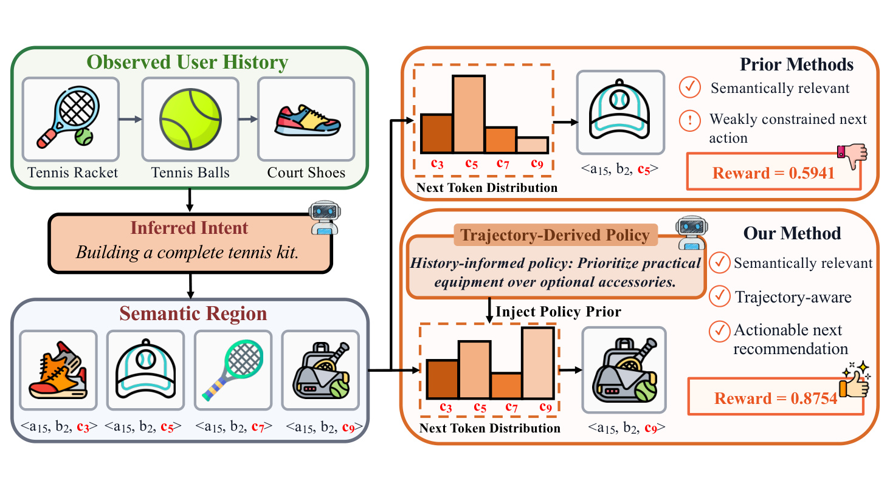
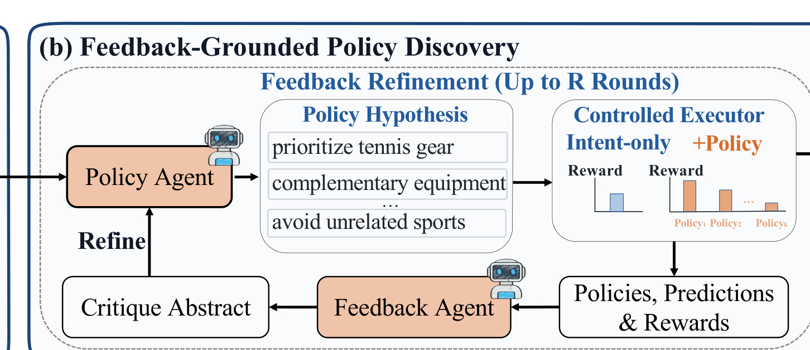
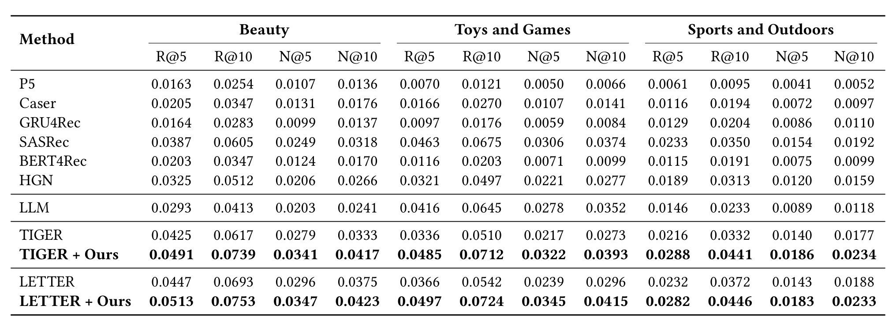
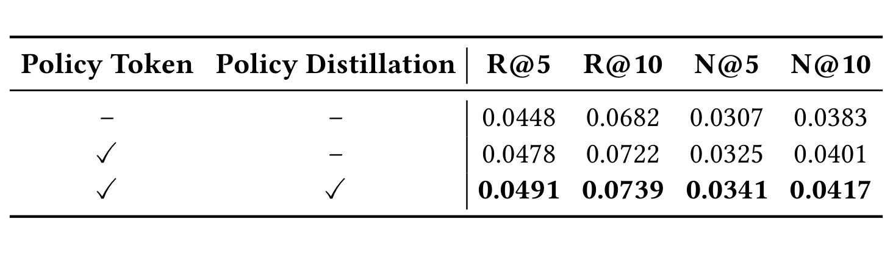
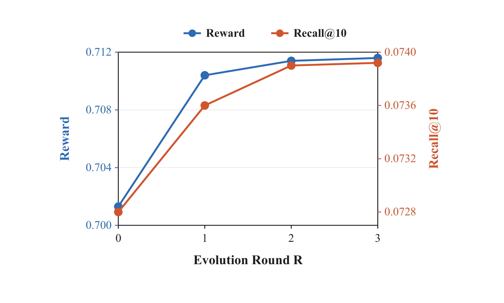
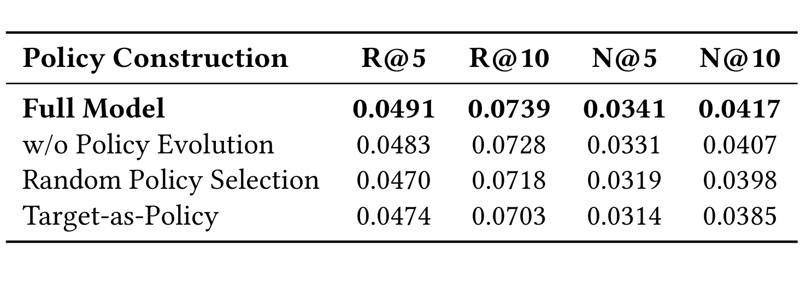
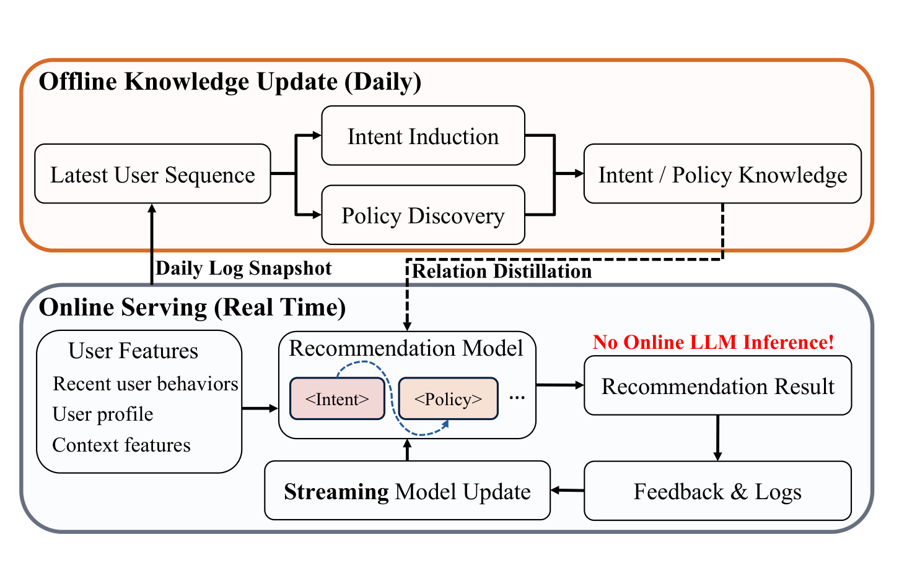
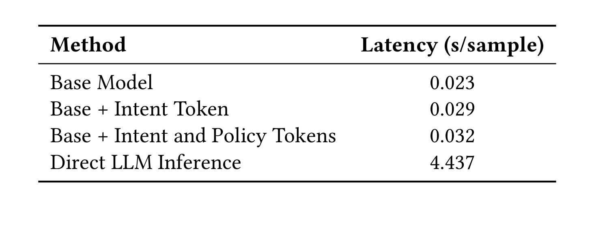
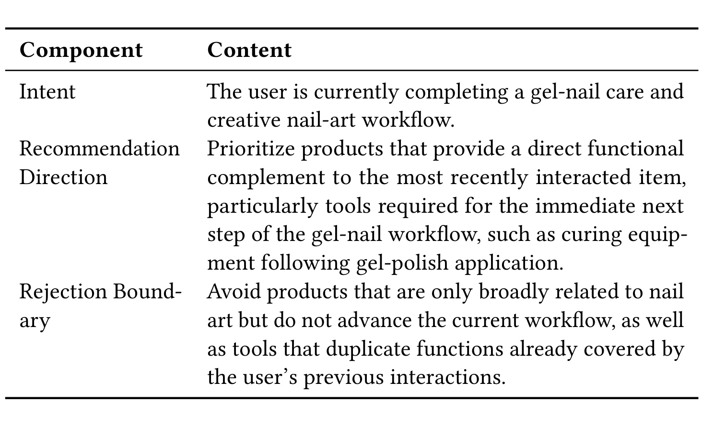
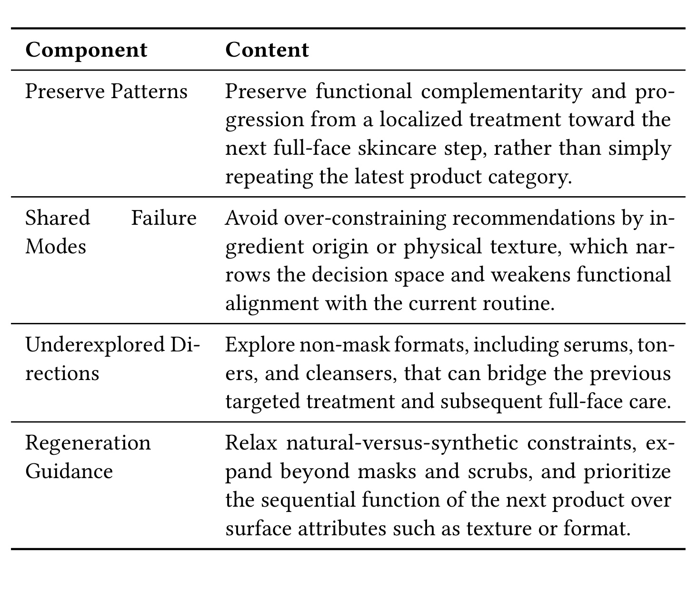

从理解到行动：面向生成式推荐的反馈驱动策略发现
- 英文题目：From Understanding to Action: Feedback-Grounded Policy Discovery for Generative Recommendation
- 作者：Zhi Chen、Minmao Wang、Xingchen Liu、Haoqiang Liang、Huihuang Lin、Likang Wu、Hongke Zhao、Yulong Wang、Shijie Yi、Fei Pan、Peng Jiang
- 机构：华中农业大学、复旦大学、快手科技、天津大学
- 版本：arXiv:2607.27789v1，2026-07-30，cs.IR
- 关键词：生成式推荐、Semantic ID、LLM Agent、策略发现、关系蒸馏
1. 背景和问题
1.1 SID 推荐已经会“生成”，但监督仍停在 item
Semantic-ID（SID）生成式推荐把一个物品编码成多层离散语义码，再像生成语言一样逐 token 预测下一物品。这样既能用序列模型表达层级语义，又把候选空间压进结构化的短码序列，适合统一召回与排序。但是，最终监督依旧来自“用户下一次点了哪个 item”。同一个目标迫使模型同时学两件不同的事：一是用户此刻究竟想完成什么任务，二是在这一需求下系统应当优先哪个动作、拒绝哪些看似相关却不合适的候选。传统 item-level loss 不显式区分二者，学到的往往是共现和局部转移。
LLM 的世界知识能补足第一件事。它可以把网球拍、网球和球鞋连成“正在配齐一套网球装备”，而不是把三次行为当作三个孤立兴趣；也能从长期爱好和最近操作中提炼短期任务。但论文强调，语义解释正确并不等于推荐决策正确。LLM 没有天然接受过推荐结果反馈训练，同一任务区域中，帽子、球包、护腕都可以语言上自洽，却未必都符合这名用户偏好实用装备、反感可选配饰的动作边界。
核心问题是：LLM 能理解用户当前需求，却没有推荐结果约束；因此“听起来合理”的意图或推理，不能保证产生带来正向结果的下一步动作。Intent 只把候选缩到相关语义区域，仍不足以在区域内决定该优先什么、排除什么。
1.2 Understanding–Action Gap
论文把需求状态称为 intent knowledge，把“如何行动”称为 policy knowledge。Intent 回答“用户现在想要什么”，policy 则由 recommendation direction 与 rejection boundary 两部分组成：前者规定应优先的历史到下一物品的功能转移，后者抑制语义相关但对当前上下文不合适的替代项。这里的 policy 不是长期业务规则，也不是 LLM 对 intent 的换一种说法，而是用户级、当前决策级的动作原则。

Figure 1 把两种知识的分工画得很具体。左侧相同历史先得到“配齐网球套装”这一 intent，并把候选约束到网球用品区域；prior method 仍在该区域内给出弱约束分布，示例 reward 为 0.5941。下方方法从历史轨迹提取“实用装备优先于可选配饰”的 policy，将这一先验注入下一 token 分布，选择球包并得到 0.8754。关键不是 policy 提供了更多品类词，而是它补上了“功能补全”和“不要重复/不要可选配饰”的动作边界。图中两个 reward 是案例性语义相似得分，并非公开 benchmark 的 Recall，也不能把一次案例差值当作线上收益；它的证据价值在于明确问题变量，而不在于证明普遍效果。
这一区分也改变了如何使用 LLM。如果直接让 LLM 在线逐请求推理，它既昂贵，又可能用语言流畅度替代 outcome utility。作者采用 teacher–student 路线：LLM 只在离线阶段归纳 intent、提出与修订 policy；轻量 SID 模型在线执行。真正的新点不是“把 LLM 知识蒸馏进推荐”，而是先用结果反馈筛掉无增益的策略，再分别迁移需求关系和动作关系。这样，student 接收的是被训练轨迹验证过的 policy teacher，而非未校验的自然语言建议。
论文同时把问题限制在 next-item 生成推荐：历史按时间排序，目标是下一次交互，policy 以训练序列的 prefix–successor 轨迹提出并用训练末项反馈验证。它并没有解决长期留存、多目标约束、探索公平或因果策略学习；“policy”一词也不等同于强化学习中的完整状态—动作策略。理解这个边界很重要，否则容易把一套离线候选比较机制过度解释为通用决策 agent。
2. 方法
2.1 任务意图与总体链路
给用户集合 (\mathcal U)、物品集合 (\mathcal V) 和按时间排列的历史 (H_u=(v_{u,1},\ldots,v_{u,T_u}))，每个物品被量化为 (L) 层 SID：
符号解释：(c_v^{(\ell)}) 是物品 (v) 的第 (\ell) 层语义码，(y_u) 是下一物品，(\mathbf c_{y_u}^{(<\ell)}) 是已生成的 SID 前缀，(p_\theta) 是轻量生成式推荐器。这个基础目标只看到 target SID，因而没有显式 intent 和 policy 变量。
Intent Agent 读取历史及其标题/品类元数据，生成当前任务意图 (I_u)，再由冻结语义编码器 (E) 得到 teacher 表示 (\mathbf e_u^I=E(I_u))。提示词要求它描述“当前正在完成、维护、替换或探索什么”，禁止直接预测 item、品类路径、ID 或无证据的人口属性。意图是需求条件，不是标签泄漏通道。

这里对象级截取 Figure 2 的 (b) 子面板，集中显示 policy discovery 的闭环。Policy Agent 提出若干包含优先方向与拒绝边界的假设；固定 executor 分别运行 intent-only 和 +policy 分支，把预测与 reward 送入 Feedback Agent；后者不逐条润色，而是生成组级 critique，再回流给 Policy Agent 做新一轮 refine。原总图的另外两部分分别负责 intent induction，以及把两类 teacher 关系迁入按 Intent Token、Policy Token 排序的 student 链。三者不是同时在线运行：agent、文本教师和语义 encoder 都属于离线监督，在线只留下 backbone 与两枚 latent token。选取子面板是为了保留一个完整、单对象的机制闭环，同时避免把相邻蒸馏与联合学习面板混成页带。
2.2 策略假设、受控执行与反馈演化
对训练历史中的每个正向转移，作者构造 (\mathcal T_u={(H_{u,<t},v_{u,t})}_{t=2}^{T_u})。Policy Agent 在历史、元数据和 intent 条件下每轮提出 (K=5) 条不同策略：
每条策略必须同时写优先方向和拒绝边界。轨迹在这里只是提出假设的 evidence，不保证策略有效。固定 executor 首先在不带策略时生成 intent-only 的下一物品文本画像 (\widehat M_{u,0})，再对每条策略独立生成 (\widehat M_{u,k}^{(r)})。训练序列最后一个物品的文本画像记为 (M_u^+)，冻结 encoder 给出基线 reward 和增量 advantage：
符号解释：(r) 是反馈演化轮次，(k) 是候选策略，(A_{u,k}^{(r)}) 只度量加入 policy 后相对同一 intent-only 分支的增量。作者不用 Recall@K 当 agent feedback，是因为训练末项还没进入 top-K 时所有候选都会拿到零，无法指出“哪条策略让目标更接近”。语义相似度提供稠密信号，但它仍是 surrogate reward；它是否可靠取决于冻结 encoder 的几何结构，不能自动等价为曝光后的业务价值。
Feedback Agent 只看到策略、其独立执行预测和 advantage，不看到历史、intent、隐藏目标或目标表示。它做组内比较，抽取高 reward 候选共有模式、低 reward 候选失败边界和欠探索方向，得到 (Z_u^{(r)})。Policy Agent 再结合历史、当前策略组和 critique 生成下一轮：
新一轮只有在最佳 advantage 超过前一轮时才继续，最多 (R) 轮；实验实际设 (R=2)。最终跨轮取 ((r_u^,k_u^)=\arg\max_{r,k}A_{u,k}^{(r)})，并编码 (\mathbf e_u^P=E(P_u^))。只有至少一条候选满足正 advantage 的用户才参与 policy distillation*；没有正候选的用户仍训练推荐 loss 和 intent distillation。验证与测试目标不参与策略生成、评估或反馈，至少在论文定义上避免了显式 test leakage。
2.3 有序 latent chain 与双空间关系蒸馏
学生在目标 SID 之前加入 Intent Token (q_I) 和 Policy Token (q_P)。历史先产生 intent hidden state (\mathbf h_u^I)，Policy Token 再条件于历史与前一个 intent state 得到 (\mathbf h_u^P)，随后才自回归生成各层 SID。这个顺序把“理解—规划—生成”写入解码位置，但 token 本身没有可读自然语言；其语义来自推荐 loss 与 teacher 关系监督共同塑形。
语言 teacher 和行为 student 不共享坐标系，直接用 MSE 对齐每个向量可能过度约束。作者先投影 student state 为 (\mathbf z_u^X=g_X(\mathbf h_u^X))，其中 (X\in{I,P})，再对同批用户构造一阶关系分布：
符号解释：teacher 侧 (\mathbf r_u^{X,T}=\mathbf e_u^X)，student 侧 (\mathbf r_u^{X,S}=\mathbf z_u^X)，(\tau_\nu) 是各空间温度，(\mathcal B_X) 是具备相应监督的 batch 用户。该项要求 student 保存“谁与谁相似”的分布，而非复刻 teacher 的绝对坐标。
高阶关系先保留 teacher 定义的一阶 top-(K_1) 邻居构成稀疏 profile (\widetilde{\boldsymbol\pi}i^{X,\nu})，再以 profile 内积 (g{ij}^{X,\nu}=\langle\widetilde{\boldsymbol\pi}_i^{X,\nu},\widetilde{\boldsymbol\pi}_j^{X,\nu}\rangle) 寻找排除自己和一阶邻居后的 top-(K_2) 用户，形成高阶分布 (\boldsymbol\rho_i^{X,\nu})。直观上，一阶问“两个用户近不近”，高阶问“他们的邻域形状像不像”；后者试图迁移超出直接近邻的结构，同时避免把同一近邻关系重复算两遍。
2.4 联合目标与推理边界
对 intent 和 policy 两个空间，一阶与高阶结构用带 stop-gradient 的 KL 迁移：
符号解释：(\gamma) 控制高阶项，实验设 0.1；(\operatorname{sg}) 阻止梯度回传到冻结 teacher。推荐目标在两枚 token 条件下生成 SID，最终损失是
符号解释：(\lambda_I,\lambda_P) 是两种教师监督权重。训练时使用 LLM agents、文本 intent/policy、语义 encoder 和投影头；推理时移除这些 teacher 组件，只保留 SID recommender 以及两枚 latent 位置。因而“LLM-free”准确地说是在线请求路径无 LLM，而不是全系统无需 LLM：离线每天仍要生成、执行和比较多条策略，成本、失败重试和 teacher 漂移仍需工程治理。
3. 实验结果
3.1 设置与证据口径
公开实验使用 Amazon Review 的 Beauty、Toys and Games、Sports and Outdoors：用户数分别为 22,363、19,412、35,598，物品数 12,101、11,924、18,357，交互数 176,139、148,185、260,739，平均序列长度 8.87、8.63、8.32。按时间留最后一次测试、倒数第二次验证，其余训练。离线指标为 Recall@5/10 与 NDCG@5/10；backbone 为 TIGER 和 LETTER，并比较 P5、Caser、GRU4Rec、SASRec、BERT4Rec、HGN 与直接 Qwen3.5-122B-A10B 画像检索。
实现使用 8 张 80GB NVIDIA A800，batch 2048，训练 200 或 300 epoch；(\lambda_I,\lambda_P) 从 0.5/1.0 选择，(K_1=K_2=5)，每轮候选策略 (K=5)，最多反馈两轮。论文称所有实验重复五次并报告平均值，但主表没有标准差或置信区间。因此，“平均更高”可以从表中核验，跨随机种子稳定性和显著性却不能仅由主表判断。
3.2 三数据集主结果

Table 1 显示，把框架接到 TIGER 后，Beauty 的 R@10 从 0.0617 升到 0.0739，Toys 从 0.0510 升到 0.0712，Sports 从 0.0332 升到 0.0441；对应 N@10 从 0.0333/0.0273/0.0177 升到 0.0417/0.0393/0.0234。接到 LETTER 后也分别达到 R@10 0.0753、0.0724、0.0446，三组均高于原 LETTER 的 0.0693、0.0542、0.0372。最强传统模型和直接 LLM 并未超过加入本文框架的 SID 模型。这支持“可插拔到不同 SID backbone”和“意图/策略知识对三品类有一致增益”，但不证明迁移到更长历史、非电商场景或未见语言域仍成立；公开序列平均只有约 8–9 次交互。
3.3 Policy 是否真的补足 intent
Beauty/TIGER 上，87.74% 训练用户至少存在一条正 advantage 候选并获得 policy supervision。这个比例一方面说明 gate 没有把所有 LLM 文本都当知识，另一方面也暴露选择性：其余用户没有 policy teacher，且正样本集合可能系统性偏向语义 encoder 容易判定的用户。

Table 2 的三行逐步拆开容量和知识：只有 Intent Token/intent distillation 时 R@10 为 0.0682；增加 Policy Token 位置但不蒸馏 policy 时升到 0.0722；再加入经过 outcome gate 的 policy distillation 达到 0.0739。四个指标都呈同一顺序。这意味着两枚 token 的结构本身有收益，但 full model 仍需要 teacher 信号才能达到最佳。Table 3 进一步给出 SID prefix 角色：相对 TIGER，intent 对第一层 R@10 的绝对增益为 +2.23 个百分点，到第三层降为 +1.19；在 intent 之上，policy 对第一层仅 +0.01，第三层却 +0.37。这个粗到细分工和方法叙事相符：intent 先定位语义区域，policy 在深层码上细分动作。

Figure 3 中平均最佳策略 reward 与 Recall@10 从第 0 轮到第 1 轮同时明显上升，第 2 轮继续小幅提高，第 3 轮基本饱和。两条曲线同向是必要的 sanity check：若 agent 只在优化 encoder 相似度而排序效果不动，surrogate reward 就失去意义。结果也解释了实际最多两轮的选择——大部分增益已经取得，再增加离线 agent 调用的边际收益很小。不过图只给 Beauty/TIGER 的均值曲线，没有方差、用户分群或 reward–Recall 的逐样本相关系数，因此它证明的是聚合趋势一致，不足以证明每个用户上 advantage 都是无偏的排序改进信号。曲线在第三轮仍有极小变化，也不应被解读为严格单调保证；实际算法用“新一轮最佳 advantage 必须提高”的停止门槛控制个体轨迹。

Table 4 把 full model 的 R@10 0.0739 与三种替代方案比较：不做 Policy Evolution 为 0.0728，随机选择初始策略为 0.0718，把目标描述直接作为 policy 为 0.0703；N@10 对应 0.0417、0.0407、0.0398、0.0385。随机策略低于 advantage 选择，说明不是任意 LLM 生成文本都有用；去掉迭代也退化，说明 group-wise critique 提供了初始候选之外的信息；Target-as-Policy 更差，反驳“越接近目标文本越好”的简单注入。要注意，这些变体都在相同训练框架下比较，仍不能排除更多离线算力或提示词长度带来的间接差异；论文没有报告 agent token 成本和候选失败率。
3.4 关系蒸馏而非坐标匹配
Table 5（未重复截图）在 Beauty 上给出 full relation distillation 的 R@10 0.0739；直接特征蒸馏为 0.0698，去掉高阶关系为 0.0721，去掉 intent/policy 蒸馏分别为 0.0711/0.0722，全部去掉为 0.0709。Toys 与 Sports 的附录 Table 10/13 保持相似排序。这个结果支持两层判断：跨语言 teacher 与行为 student 时，保存用户关系比强制坐标一致更稳；intent 是更强的粗粒度底座，policy 提供较小但互补的动作增益。Figure 4/7 的相似矩阵定性地显示关系蒸馏比直接蒸馏更接近 teacher block structure，但没有给结构相关性或邻域保持率，因此数值消融仍是更可信的证据。
超参数图显示 (\lambda_I) 在 0.3–0.7、(\lambda_P) 在 0.8–1.2 附近 R@10 相对平稳，说明结果不是单点尖峰；不过范围较窄，且只展示 Beauty/TIGER。关系蒸馏还有 batch 依赖：一阶分布由同批用户构造，policy batch 仅包含正 advantage 用户；batch 组成、teacher 温度和 top-neighbor 选择都可能改变关系图。复现时不应只抄联合 loss，还要固定 sampler、temperature、(K_1/K_2) 和 policy 可用用户掩码。
3.5 线上部署、A/B 与时延

Figure 6 明确了三个时间尺度。离线 teacher 每天读取已完成日志快照，更新 intent 与 outcome-validated policy；这些信号经关系蒸馏进入学生。学生模型同时用新日志持续流式训练；每次在线请求只消费实时行为、用户画像和上下文，内部生成两枚 latent token 与目标 SID，再将结果反馈到日志。虚线蒸馏链不在实时请求路径中，因此论文称“无在线 LLM 推理”是成立的架构描述。代价是 teacher 一天内固定：突发需求、冷启动和当天策略漂移只能由实时 student 行为学习吸收，policy 文本不会即时刷新。
线上 A/B 在快手本地生活广告系统运行 7 天，约覆盖 1325 万用户和 161 万物品，实验组与对照组各占总流量 5%，约 7000 万交互样本。相对生产 baseline，论文报告 Revenue +4.506%、ADVV +4.621%，并称两项在 95% 置信水平显著。ADVV 的提升略高于 Revenue，符合作者“广告主价值和平台收入共同提高”的目标。这里必须保持口径克制：正文没有给置信区间端点、p 值、方差估计、随机化单元、分层结果、长期留存与体验 guardrail，也没有说明多重检验；因此可以引用相对提升和作者的显著性声明，不能自行补出统计不确定性或断言长期因果效果。

Table 6 报告基础模型每样本 0.023 秒，加入 Intent Token 为 0.029 秒，再加入 Intent 与 Policy 两枚 token 为 0.032 秒，而直接 LLM 推理为 4.437 秒。在该 serving 配置下，双 token 相对基础模型增加 0.009 秒，但比直接 LLM 快约两个数量级，这与部署图的在线边界相互验证。表中是平均每样本时延，不是端到端 P95/P99；也没有网络、候选检索、批处理和缓存口径。因而能得出的结论是“学生 latent chain 的模型侧增量小于在线 LLM”，不能据此承诺生产 SLA 或跨硬件保持相同倍数。更完整的生产验收还应报告吞吐、显存、teacher 日更批量成本，以及 student 流式更新对资源峰值的影响；这些成本不在当前表内。
3.6 两个案例看策略是否可解释

Table 14 的用户先后看过指甲锉、点花工具与凝胶甲油。Intent 识别“完成凝胶美甲流程”，但 intent-only 预测仍是美甲刷，语义 reward 0.5941；入选 policy 明确优先“紧接最近物品的功能补全”，尤其是甲油后的固化设备，同时拒绝只在大类上相关或重复已有功能的工具。policy-conditioned 分支命中一只手 LED 固化灯，reward 升到 0.8754。它说明 rejection boundary 不只是负关键词，而是基于历史已完成步骤排除重复动作。案例仍由单个训练轨迹和同一语义 encoder 评估，适合说明机制，不代表真实用户必然购买固化灯。若历史里的“甲油→固化灯”本就是强共现，策略文字可能只是把既有转移显式化；论文没有把这类已知规则与真正新发现的 policy 分组报告。

第二个案例更能说明“反馈”做了什么。用户历史涉及眼部抗皱贴与膨润土清洁，intent-only 预测仍是 clay mask；五条初始策略中，强调护肤流程推进和功能互补的候选较好，过度限制天然成分、物理质地或继续面膜格式的候选较差。Table 17 让 Feedback Agent 把比较结果压成四类：保留从局部治疗到全脸护理的功能推进；纠正 ingredient/texture 的过窄边界；探索 serum、toner、cleanser 等非面膜格式；再生成时优先顺序功能而非表面属性。它没有看到隐藏目标 rose-water toner，也没有返回具体 item，而是在策略层总结相对 advantage 的模式。
反馈后入选策略把方向改为非面膜的 toner/serum/gentle cleanser，并排除重复眼部产品和无必要的“天然”限制；最佳 reward 从 0.5854 升到 0.6765。值得注意的是，演化预测是 leave-on facial serum，不是精确的隐藏 toner。作者仍将其视为通过，因为它从重复面膜移动到更合适的非面膜全脸处理区域。这既展示稠密语义 reward 的价值，也揭示边界：agent 学到的是方向性改进，不保证 item-level 命中；如果 encoder 把错误物品放在相近语义区域，正 advantage 也可能接受一个业务上无效的 policy。
4. 总结
4.1 论文真正贡献了什么
这项工作把“LLM 理解用户”拆成两个可验证阶段。第一，task-oriented intent 从行为中抽取当前需求，而非长期画像或目标 item；第二，policy 用优先方向与拒绝边界描述系统应如何行动，并且只有相对 intent-only baseline 带来正 advantage 的候选才成为 teacher。Group-wise feedback 不是让 LLM 自评文案，而是比较相同上下文、相同 executor 下多个候选的执行后果，再指导下一轮。这个设计把语言合理性降为假设来源，把 outcome feedback 提升为策略保留门槛。
部署侧的贡献是把离线 teacher 知识写入有序 Intent/Policy Token，而非在线运行 agent。关系蒸馏承认语言空间与行为空间坐标不一致，只迁移一阶邻居分布和高阶邻域结构。公开三数据集、两种 SID backbone 的一致提升，策略选择/演化/蒸馏消融，7 天工业 A/B 与模型侧时延，共同形成从机制到部署的证据链。尤其是离线发现、在线执行的角色分离，对需要控制 LLM 时延和不稳定性的工业推荐很有参考价值。
4.2 风险、偏差与复现优先级
最重要的风险来自 feedback 并非真实在线 outcome，而是训练末项文本与 executor 预测之间的冻结 encoder 相似度。训练历史由既有曝光策略产生，正向 prefix–successor 轨迹同时包含用户偏好、旧模型偏差和可见性偏差；Policy Agent 可能把“历史系统经常展示什么”误写成“用户应该被如何推荐”。只有正 advantage 用户参与 policy distillation 又构成选择偏差，冷启动、稀疏序列或语义 encoder 表示较差的用户可能持续缺少动作监督。若部署到不同域，应增加 IPS/DR 等去偏评估、负反馈、分群覆盖率与 policy acceptance rate，而不能只复用当前 reward。
离线与线上证据也要分开读。Amazon leave-one-out 的短序列 R/N@K 证明下一物品排序改进；快手广告的 Revenue/ADVV 证明特定生产环境七天的业务变化。二者指标、候选空间、流量分配和用户动机不同，不能用线上结果反推公开离线机制的每个环节都正确。线上只给相对数与“95% 显著”，缺少区间端点、实验随机化细节、体验护栏、广告主/用户分群和长期效应；未来最值得补的是策略覆盖—离线增益—线上指标三者的分层联系。
复现应按四步推进：先固定 Amazon 切分、SID tokenizer 与 TIGER/LETTER baseline，确保 Table 1 口径；再只加入两枚 latent token，复现 Table 2 的结构增益；随后实现 target-blind 的候选执行、正 advantage gate 与最多两轮反馈，记录每用户候选数、LLM token 成本、失败率和正策略覆盖；最后加入一阶/高阶关系蒸馏并比较直接 MSE。论文 v1 没有在摘要页提供独立代码链接，agent 提示词虽在附录完整给出，但数据预处理脚本、线上系统与 teacher 生成缓存不可得。因此当前最可复核的是公式、prompt、公开表格与消融逻辑，完整数字复现仍依赖作者后续代码或更细实现说明。
我的判断是：本文最有价值的不是又加了一个 LLM 用户画像，而是提出了一个可审计的知识准入原则——只有在受控比较中改善结果的语言策略，才值得进入在线模型。这个原则能减少“LLM 说得通就当真”的风险；但它能否跨域成立，取决于 reward 是否比语言 plausibility 更接近真实效用。下一步研究应把语义 advantage 扩展到多目标、去偏且带不确定性的反馈，并报告失败策略、未覆盖用户和长期 guardrail，才能把 feedback-grounded policy 从有效原型推进为稳健决策层。